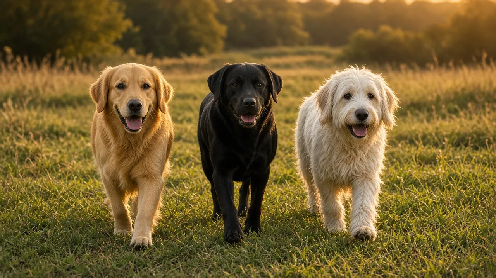

Is the "alpha dog" idea true? What the research says about dominance
No. The popular idea that your dog is trying to dominate you, and that you must act as the "alpha", is not supported by modern research. Wolf biologist L. David Mech found that wild wolf packs are families led by the parents rather than groups fighting for rank, and the American Veterinary Society of Animal Behavior advises against trainers who rely on dominance, pack leader or alpha theories and against forceful techniques such as alpha rolls.

Where the alpha idea came from
The classic picture of a wolf pack is a group of individuals constantly competing for rank, kept in check by an "alpha" male and female. In his 1999 paper in the Canadian Journal of Zoology, L. David Mech writes that most research on wolf pack social dynamics had been done on "non-natural assortments of captive wolves", unrelated adults housed together. Dog training borrowed that picture and concluded that dogs, as descendants of wolves, must be trying to climb a hierarchy in the home, and that owners should win by force. The USGS record, including that abstract, was opened on 20 November 2026. The publisher record is DOI 10.1139/z99-099.
What wild wolves actually do
Mech based the paper on a literature review and 13 summers watching free living wolves on Ellesmere Island, Northwest Territories, Canada. The abstract's conclusion is that the typical wolf pack is a family. The adult parents guide the group through a division of labor: the female predominates in pup care and defense, and the male predominates during foraging, food provisioning and the travel that goes with them. In that account the "alphas" are the parents. The rank comes from being the parents, not from winning fights against a pile of unrelated adults.
A pet dog is not that wolf pack
Even if the captive wolf studies had been right about wolves, a dog in a house is a different case. AVSAB's 2008 statement on dominance theory says the best model for understanding domestic dogs is domestic dogs, and that dogs have diverged significantly from wolves in the last 15,000 years. Explaining a dog's behavior toward its owner with a model built on unrelated captive wolves stacks one shaky assumption on another. For the day to day reading of dog behavior, see the behavior guide and what the jealousy experiments found.
What veterinary behaviorists say now
The AVSAB 2021 position statement on humane dog training, PDF opened 20 November 2026:
- advises that clients should be steered away from trainers who discuss out of date ideas such as "dominance", "leader of the pack" or "alpha" theories;
- lists forceful manipulation such as "alpha rolls" and "dominance downs" among intimidation techniques to avoid, along with shouting, staring and physical corrections;
- says the documented fallout of aversive methods includes increased anxiety, fear related aggression, avoidance and learned helplessness;
- says there is no evidence that aversive training is necessary, and that reward based methods should be used for ordinary skills and for behavior problems. The statement's FAQ on aggression says there are no exceptions.
On 20 November 2026 the AVSAB position statements page still carried a board note labelled 2025. That note calls the 2021 statement "the most current and authoritative expression of our views." It also says an older AVSAB document, which had suggested aversives might be acceptable in some situations, has been rescinded, and that AVSAB does not support the use of aversives in any context.
The earlier 2008 puppy socialization statement already preferred the same direction: positive, consistent training is associated with fewer behavior problems and greater obedience than methods that use punishment or encourage human dominance. How to use the early months is in when the socialization window closes.
Dominance, in the 2008 statement, is a narrow idea
The same 2008 PDF, opened again on 20 November 2026, defines dominance as a relationship between individual animals that is established by force or aggression and by submission, so one of them has priority access to resources such as food, resting spots and mates. It cites Bernstein (1981) and Drews (1993) for that definition, and it says the relationship does not exist until one animal consistently defers.
Most of what owners call dominance fails that test. AVSAB's examples are excessive barking, unruly greetings and not coming when called. Those persist because they were rewarded, and because a different behavior was never taught. Jumping up gets attention. Ignoring a recall means something else is paying better. Stealing food while nobody is watching is, in the statement, an alternate strategy for getting the resource, not a bid for higher rank. The standard of care it sets for veterinarians who specialize in behavior is that dominance theory should not be the general guide for changing behavior.
On the alpha roll, the statement says higher ranking wolves do not flip lower ranking wolves onto their backs. A wolf that rolls is offering the posture. AVSAB cites a 2008 conference report by Herron, Shofer and Reisner for the finding that confrontational techniques, including an alpha roll, staring a dog down and a "dominance down", frequently elicited an aggressive response. That citation is a conference abstract as AVSAB describes it. A full journal version was not re-read on 20 November 2026, so this page does not turn it into percentages.
So what is going on when my dog...
| Behavior often called "dominant" | A more useful explanation | What helps |
|---|---|---|
| Pulling on the lead | Pulling gets the dog where it wants to go, so it is reinforced every walk. | Reward a loose lead; stop when the lead goes tight (how to). |
| Jumping up | An enthusiastic greeting that gets attention, even negative attention. | Reward four paws on the floor or a sit; manage greetings with a lead. |
| Going through doors first | The interesting stuff is on the other side. | Teach a short wait at the door with rewards, if it matters to you. |
| Growling over food or toys | Worry about losing something valuable (resource guarding). | Do not snatch or punish; trade for something better and ask your vet or a qualified behavior professional for help. |
| Not coming when called | Something else is more rewarding than you right now. | Make coming back the best deal in the park; use a long line while training. |
Punishing a growl can hide the warning without changing the worry behind it. For aggression, the 2021 statement says humane methods have no exceptions, and a trainer who is stuck should refer to a veterinarian, a board certified veterinary behaviorist or a certified applied animal behaviorist. Yawning, a tucked tail and a sudden freeze are stress signals that often show up before a growl.
Structure without force
Dogs do need structure. The 2021 statement is explicit that reward based training does not mean letting dogs do whatever they want. Animals learn best with structure, routine and guidelines, taught without fear, intimidation or pain. You control the resources, set the room up so the right choice is easy, and reward the behavior you want to see again. Start with the training guide.
Sources checked 20 November 2026: the USGS record of Mech 1999 (abstract), DOI 10.1139/z99-099, the AVSAB 2021 humane training PDF, the AVSAB 2008 dominance PDF, the AVSAB 2008 puppy socialization PDF, and the AVSAB position statements page.
Frequently asked questions
Should I be the alpha or pack leader for my dog?
No. AVSAB's 2021 humane training statement, which its board note labelled 2025 still calls the current view, says not to hire trainers who teach dominance or alpha theories. Teach with structure and rewards instead.
Did the scientist who studied alpha wolves change his mind?
L. David Mech's 1999 paper, based on 13 summers watching wild wolves on Ellesmere Island, concluded that a typical wild pack is a family led by the parents. The USGS abstract, rechecked 20 November 2026, says most earlier research used non natural groups of captive wolves.
Is an alpha roll ever OK?
No. The 2021 AVSAB statement lists alpha rolls and dominance downs among intimidation techniques to avoid. The 2008 dominance statement says wolves do not pin subordinates that way, and that confrontational methods often drew aggression.
Sources
- Mech LD (1999). Alpha status, dominance, leadership, and division of labor in wolf packs. Canadian Journal of Zoology 77(8):1196 to 1203. DOI 10.1139/z99-099, U.S. Geological Survey record
- Publisher record for Mech 1999, DOI 10.1139/z99-099, NRC Research Press via doi.org
- Position Statement on Humane Dog Training (2021), American Veterinary Society of Animal Behavior
- Position Statement on the Use of Dominance Theory in Behavior Modification of Animals (2008), American Veterinary Society of Animal Behavior
- Position statements, including the board note labelled 2025 on the 2021 humane dog training statement, American Veterinary Society of Animal Behavior
- Position Statement on Puppy Socialization, American Veterinary Society of Animal Behavior
General education only, not veterinary advice. If you are worried about your dog, contact your vet; in an emergency, contact an emergency vet straight away.